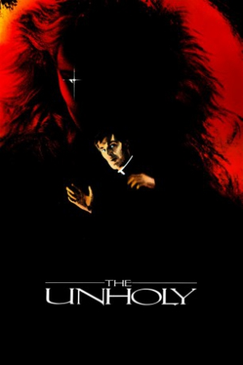

The Unholy (1988)


Seduction. Submission. Murder. Tonight... evil goes over the edge.

Country:United States, 102 minutes
Spoken languages:English
Genres:Horror
Director(s):Camilo Vila
Writer(s):Philip Yordan, Fernando Fonseca
Video Codec:Unknown
Number: 2507
Tomatometer:

25%

44%
IMDb Rating:


5.0/10 (2K votes)
Certification:R